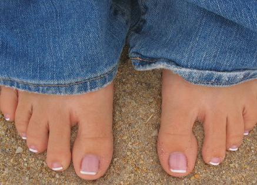
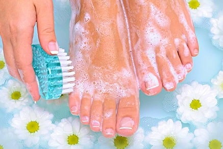
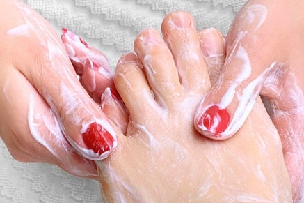

Come sbarazzarsi dell'infezione fungina in 9 giorni: metodo semplice che funziona davvero
Ciao a tutti, sono di nuovo io! Voglio condividere con voi la mia felicità, finalmente mi sono liberata della terribile malattia di cui soffrivo. Mi ricordo ancora tutte le cose che ho dovuto provare prima di trovare questo fantastico metodo. Ho scoperto che l'infezione fungina può essere curata nel giro di 7-9 giorni.
Circa un anno fa, ho scritto un post in cui vi dicevo che la mia vita era diventata un incubo. Ho 37 anni, sono una bella donna e ho molti ammiratori. Ma quando mi avvicino a un uomo, lui scappa più in fretta che può. Tutto a causa della micosi ai piedi. All'inizio la nascondevo sotto calze spesse, ma poi ha iniziato a manifestarsi un odore terribile. In più, il prurito e la desquamazione della pelle stavano peggiorando sempre di più. Era insopportabile.
L'anno scorso, ho provato qualsiasi metodo esistente. Ho perso il conto di tutte le pillole e medicinali che ho preso, ma o davano un effetto temporaneo o non funzionavano proprio. La parte più triste è che tutti i medici non sapevano come aiutarmi e mi suggerivano di provare delle pillole costosissime con un sacco di effetti collaterali. Non mi rimaneva niente da fare se non vendere l'auto e comprare un trattamento completo di medicinali antimicotici tedeschi. Il secondo giorno di assunzione, ho cominciato ad avere dolori lancinanti al fegato. Allora ho deciso di rimanere poco attraente, ma almeno di restare in vita.
Ecco cosa mi ha salvata dalla micosi. Un rimedio economico
Ho trovato la soluzione in modo inaspettato. Una vecchia amica mi ha parlato di una podologa certificata che mi avrebbe aiutata a liberarmi di questa cosa oscena. Di solito non accetta clienti affetti da micosi alle unghie, ma sono riuscita a convincerla acquistando dei nuovi strumenti che avrebbe potuto utilizzare su di me. Dopo aver esaminato le mie unghie, mi ha detto di provare una pomata antifungina chiamata . Ha detto che in una settimana il mio problema sarebbe scomparso e che avrei dovuto prendere un appuntamento per allora. Ha anche suggerito di acquistare questo prodotto solo sul sito ufficiale del distributore , in modo da non rischiare di imbattermi in un prodotto contraffatto che mi avrebbe solo fatto del male.
Onestamente, all'inizio non le credevo. Mi sembrava uno scherzo e temevo di rimanere delusa un'altra volta. Ho letto un sacco di recensioni positive circa questo prodotto e così ho deciso di provare la crema . Inoltre, non costa molto, perciò non avevo nulla da perdere.
Il pacco è arrivato in fretta. L'ho aperto immediatamente e ho iniziato a leggere le istruzioni. Ecco come agisce il prodotto:
- Uccide il fungo in poco tempo: 7-9 giorni. Ripara completamente la pelle danneggiata e la superficie delle unghie.
- Calma l'irritazione e l'arrossamento. Lenisce la pelle e le fornisce vitamine e minerali.
- Ha un forte effetto preventivo. Impedisce la ricomparsa dell'infezione.
- Elimina istantaneamente l'eccessiva sudorazione e l'odore sgradevole combattendo la causa del problema.
- Riduce il gonfiore e normalizza la circolazione sanguigna.
- Restituisce elasticità alla pelle e le dà un colorito sano.
- Rallenta il processo di rallentamento della pelle grazie agli antiossidanti naturali.
L'infezione fungina scompare per sempre. Risultati visibili dopo solo 3 giorni.
Ho cominciato a usare la crema seguendo le istruzioni e le informazioni sul sito del fornitore . L'ho applicata due volte al giorno: la mattina prima di andare al lavoro e la sera prima di andare a letto. Ad essere sincera, non mi aspettavo affatto dei risultati miracolosi. Ma già la sera del primo giorno, ero meravigliata. Per la prima volta in molto tempo, non ho notato alcun cattivo odore dopo essermi tolta le scarpe. Le calze erano asciutte, il rossore era quasi scomparso. La crema ha fatto miracoli!
Al terzo giorno di utilizzo della crema , sono riuscita a liberarmi completamente del rossore e della pelle squamata. Tutte le aree danneggiate sono guarite più in fretta di quanto non mi aspettassi. E, cosa più importante, la piastra ungueale danneggiata ha cominciato a rigenerarsi. Il nono giorno, non c'era più traccia dell'infezione con cui avevo combattuto per anni. Il brutto aspetto, il cattivo odore e le zone arrossate erano spariti! La pelle è riuscita a rigenerarsi completamente e a diventare morbida, liscia e idratata.
Sono anche rimasta molto sorpresa dal fatto che questa crema antifungina contenga solo ingredienti naturali e dei potenti antiossidanti che aiutano a ringiovanire la pelle e a prevenirne l'invecchiamento. Se la usate per scopi preventivi, allora il rischio di contrarre un'infezione fungina si riduce praticamente a zero.
Finalmente, mi sento alla grande. Non mi devo più preoccupare, la mia vita privata è migliorata notevolmente perché non ho niente da nascondere. Lasciate che vi sveli un segreto. La crema può essere utilizzata anche per le mani. Ha le stesse proprietà anti-invecchiamento delle altre creme per le mani di alta qualità.
Ragazzi, per favore, ordinate questo prodotto solo sul sito ufficiale del distributore . Ci sono migliaia di fregature su internet. Usando il link indicato, avrete la sicurezza di non peggiorare la vostra condizione e di non sprecare soldi.
Grazie per l'attenzione, cari lettori. Spero che la mia storia vi sia utile per evitare di commettere i miei stessi errori. Chi avrebbe pensato che ci sarebbe voluto un anno prima di trovare una soluzione al mio problema per poi liberarsi dall'infezione in una settimana e mezza? Ho anche raccomandato la crema a mia madre, così si è potuta sbarazzare dell'infezione che l'ha perseguitata per anni. Le ci sono voluti 13 giorni. Le infezioni gravi di solito guariscono in molto più tempo.
Commenti:
Carolina Chiari
Melissa, grazie mille! Se non fosse stato per i tuoi consigli, avrei continuato a soffrire di micosi per anni. Con la crema , me ne sono liberata in una settimana. Ora non ho più nessun prurito, i miei piedi sono di nuovo bellissimi!
Giulia Prandi
Sono al 5 giorno di trattamento! Posso solo dire che il prodotto è un rimedio molto potente. Ero stufa di combattere gli arrossamenti, la pelle che si desquamava e il prurito. Devo aspettare ancora un po' prima di liberarmi da questo incubo.
Daria Greco
Combatto contro la micosi alle unghie da un bel po'. Sembra di giocare con un yo-yo, continua a tornare. Ho provato praticamente tutti i rimedi esistenti, ma non ha funzionato niente. Ieri, ho ordinato la crema antimicotica , quella che hai raccomandato tu. Nutro grandi speranze. Vi terrò aggiornati sui miei risultati!
Loretta Baggio
Anch'io ho cominciato il trattamento, anche se non avevo mai sofferto di micosi. Una volta, ho visto le unghie di un'amica e ho deciso che non avrei mai sofferto di quel problema. La prevenzione è una cosa sacrosanta. Ora uso una volta a settimana prima di andare a dormire e non ho nulla da temere. Posso anche andare in piscina senza infradito. Fantastico!
Sara Fieschi
Mia sorella soffriva di una forma severa di micosi. Allora le ho comprato la crema e nel giro di una settimana, era tutto passato!
Denise Ortolani
Oh, spero che funzionerà anche per me. Sono stanca di combattere contro la micosi, non vi immaginate.
Franca Ciampino
Ciao Melissa! Ci sono passata anch'io, ho sofferto esattamente della stessa cosa. Anche a me sono state prescritte le stesse cure costose, per cui ho speso una fortuna e che mi hanno praticamente avvelenata. Ne ho sofferto per più di 8 anni. Recentemente, ho trovato per caso e sono riuscita a sbarazzarmi della micosi in una sola settimana e mezzo. Rimpiango di aver passato 8 anni a provare rimedi inutili. Avrei potuto risparmiare tanto di quel tempo e denaro! A chi soffre dello stesso problema consiglio di ordinare il prodotto. Smettete di sprecare tempo.
Mara Stasi
Devo essermi persa qualcosa. Dove posso trovare questo prodotto?
Sara Cirilli
Mara, c'è un link sopra da qualche parte! Melissa l'ha anche inserito nell'articolo! Ecco il sito ufficiale di - sito
Tiziana Palumbo
Anch'io ho usato per combattere la micosi, ora lo ordino come crema mani. Nessun'altra crema dà ottimi risultati quanto . La pelle delle mani è diventata più morbida e liscia, proprio come ha detto Melissa.
Marta Poggi
Con me ha funzionato solo , nient'altro. Lo uso da 9 giorni e l'ho ordinato su questo sito . Finalmente, mi sono dimenticata dell'infezione fungina!